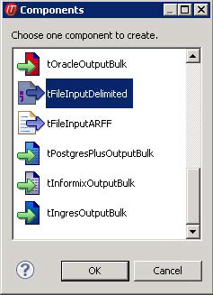
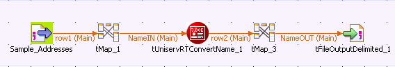
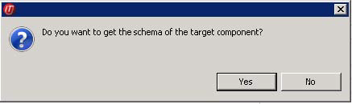
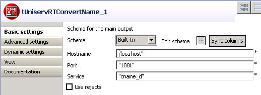

Warning
This component will be available in the Palette of the studio on the condition that you have subscribed to the relevant edition of Data Quality Service Hub Studio.
|
Component family |
Data quality | |
|
Function |
tUniservRTConvertName analyzes the name line against the context. For individual persons, it divides the name line into segments (name, first name, title, name prefixes, name suffixes, etc.) and creates the address key. The component recognizes company or institution addresses and is able to provide the form of the organization separately. It also divides lines that contain information on several persons to separate lines and is able to recognize certain patterns that do not belong to the name information in the name line (customer number, handling notes, etc.) and remove them or move them to special memo fields. | |
|
Purpose |
tUniservRTConvertName provides the basis for a uniform structuring and population of person and company names in the database as well as the personalized salutation. | |
|
Basic settings |
Schema and Edit schema |
A schema is a row description, i.e. it defines the number of fields that will be processed and passed on to the next component. The schema is either built-in or remote in the Repository. |
|
|
Host name | Server host name between double quotation marks. |
|
|
Port | Listening port number of the server between double quotation marks. |
|
|
Service |
The service type/name is Germany Italy Austria Netherlands Switzerland Belgium France Spain |
|
|
Use rejects |
Select this option to separately output data sets from a certain result class of the onward name analysis. Enter the respective result class in the field if result class is greater or equal to. If this option is not selected, the sets are still output via the Main connection even if the analysis failed. If the option is selected, but the Rejects connection is not established, the sets are simply sorted out when the analysis failed. |
|
Advanced settings |
Analysis Configuration |
For detailed information, please refer to the Uniserv user manual convert-name. |
|
|
Output Configuration | For detailed information, please refer to the Uniserv user manual convert-name. |
|
|
Configuration of not recognized input | For detailed information, please refer to the Uniserv user manual convert-name. |
|
|
Configuration of free fields | For detailed information, please refer to the Uniserv user manual convert-name. |
|
|
Cache Configuration | For detailed information, please refer to the Uniserv user manual convert-name. |
|
Usage |
tUniservRTConvertName provides the basis for a uniform structuring and population of person and company names in the database as well as the personalized salutation. | |
|
Limitation | To use tUniservRTConvertName, the Uniserv software convert-name must be installed. | |
This scenario describes a batch job that analyzes the person names in a file and assigns them a salutation.
The input file for this scenario is already saved in the Repository, so that all schema metadata is available.
Note
Please observe that the data from the input source must all be related to the same country.
In the Repository view, expand the Metadata node and the directory in which the file is saved. Then drag this file into the design workspace.
The dialog box below appears.
Select tFileInputDelimited and then click OK to close the dialog box.
The component is displayed in the workspace. The file used in this scenario is called SampleAddresses..
Drag the following components from the Palette into the design workspace: two tMap components, tUniservRTConvertName, and tFileOutputDelimited..
Connect the components via Row > Main.
During the process, accept the schema from tUniservRTConvertName by clicking Yes in the validation window.
Double-click tMap_1 to open the schema mapping window. On the left is the structure of the input file, on the right is the schema of tUniservRTConvertName. At the bottom lies the Schema Editor, where you can find the attributes of the individual columns and edit them.

Assign the columns of the input source to the respective columns of tUniservRTConvertName. For this purpose, select a column of the input source and drag it onto the appropriate column on the right side. If fields from the input file are to be passed on to the output file, like the address fields or IDs, you have to define additional fields.
Click OK to close the dialog box.
Double-click tUniservRTConvertName to open its Basic Settings view.
Fill in the server information and specify the country-specific service.
Double-click tMap_3 to open the mapping window. On the left is the schema of tUniservRTConvertName and on the right is the schema of the output file.

Click OK to close the window.
Double-click tFileOutputDelimited and enter the details for the output file.